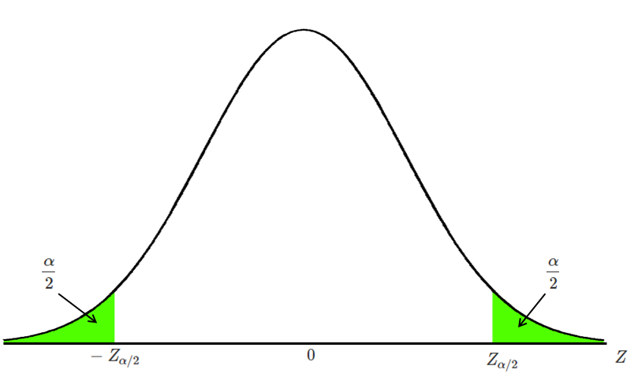
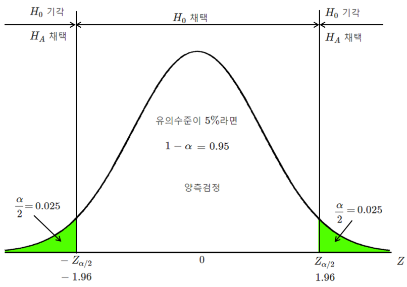
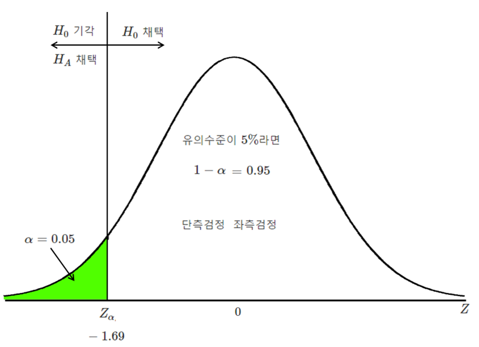
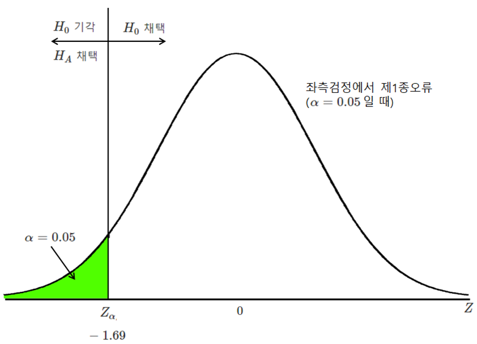
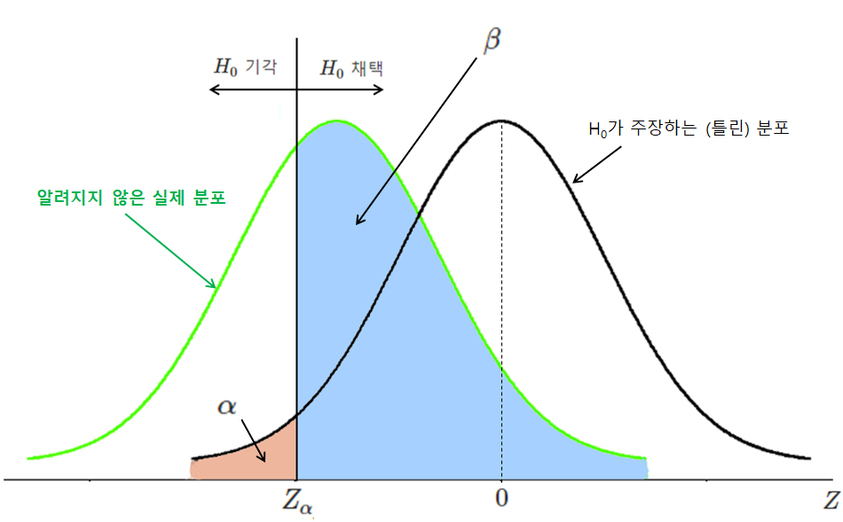
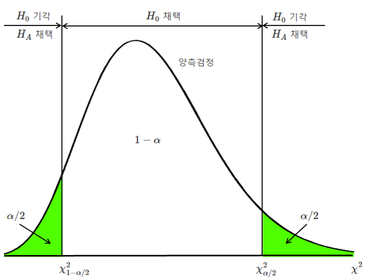
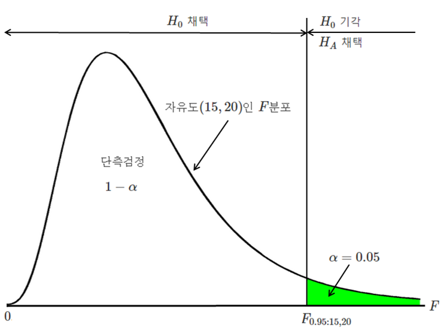

{kind=link}
data(iris)
result <- t.test(iris$Sepal.Length, conf.level = 0.95)
# 평균
mean <- result$estimate
mean
## mean of x
## 5.843333
# 신뢰구간
conf_interval <- result$conf.int
conf_interval
## [1] 5.709732 5.976934
## attr(,"conf.level")
## [1] 0.959 추정과 가설 검정
9.1 추정
추정 estimation 은 표본 통계량에서 모집단의 모수를 계산해내는 과정을 말합니다. 점 추정과 구간 추정이 있습니다. 이때 해당 통계량의 표집 분포를 이용하고 그 과정을 통계적 추론 statistical inference 이라고 합니다. 추정 외에 가설검정도 통계적 추론에 속합니다.
추정, 통계적 추론
9.2 점 추정
점 추정 point estimation 은 표본에서 모수의 값을 추정하는 것을 말하며 평균, 분산, 비율 등이 있습니다. 점 추정에 사용하는 값을 점 추정값 point estimate 또는 그냥 추정값 estimate 으로 부릅니다. 좋은 점 추정은 아래의 속성을 갖습니다.
- 일치 consistent: 표본 크기가 커지면 추정값이 더 정확해진다
- 불편 unbiased: 표집 분포의 기대값이 모수와 같다.
- 불편최소분산 most efficient: 표집 분포의 분산이 가장 작다. 즉 표본과 표본 사이의 측정값 차이가 가장 적다.
점 추정의 방법이 위의 기준을 잘 충족하는지 여부는 모집단의 분포에 따릅니다. 모집단 분포가 정규분포에 가까우면 평균이 좋은 추정방법 estimator 이지만 한쪽으로 심하게 기울었다면 skewed 중간값이 좋은 추정방법 estimator 입니다.
점 추정, 점 추정값, 추정값
9.2.1 모 평균의 점 추정
모 평균 추정값은 표본 평균을 가장 많이 사용합니다.
\[ \bar X = \frac{X_1+X_2+ ... +X_n}{n}=\frac{1}{n}\sum_{i=1}^{n} X_i \]
9.2.2 모 분산의 점 추정
모 분산 추정값은 표본 분산을 가장 많이 사용합니다. 표본분산을 구할 때 \((n-1)\)로 나누는 걸 잊지 마세요.
\[ S^{2} = \frac{\sum_{i=1}^{n}(X_i-\bar X)^{2}}{n-1} \]
9.2.3 모 비율의 점 추정
비율은 모집단에서 어떤 속성을 갖는 요소의 비율을 말합니다. 남녀 비율, 특정 후보의 지지율, 실업률, 합격률 등등이 있습니다. 모집단의 변수가 1과 0의 값만을 갖는다고 할 때 그 평균과 같습니다.
\[ p = \frac{K}{n}, \; \; K는 \; 표본에서 \; 해당 \; 속성을 \; 갖는 \; 갯수 \]
9.3 구간 추정
구간 추정 interval estimation 은 모수의 추정을 구간으로 하는 것입니다. 이때 구간을 신뢰구간 confidence interval 이라고 하는데 구간이 모수를 포함할 확률에 따라 달라지며 이때 확률을 신뢰수준 confidence level 이라고 합니다. 90%, 99% 등도 있으나 보통 95%를 많이 사용합니다. 95% 신뢰수준의 의미는, 만일 표본을 100개 뽑아서 평균의 신뢰구간을 모두 계산한다면 그 중에 95개의 신뢰구간이 모평균을 포함할 가능성을 말합니다.
일단 계산이 된 특정한 신뢰구간은 확률을 말할 수 없습니다. 따라서 계산된 신뢰구간이 모 평균을 포함하고 있을 가능성이 95%라고 말할 수 없습니다.
구간 추정, 신뢰구간, 신뢰수준
9.4 모 평균의 구간 추정
모집단이 정규 분포고 모 분산을 알 때
\[ \bar X \sim N(\mu, \frac{\sigma^{2}}{n}) , \; \; Z=\frac{\bar X-\mu}{\frac{\sigma}{\sqrt{n}}} \sim N(0,1) \] 여기서 \(Z\)는 \(\bar X\) 를 표준화시키면 표준정규분포를 한다는 것을 의미합니다.
신뢰수준이 \(c\) 라면 \(\alpha=1-c\) (즉 신뢰수준이 95%라면 $= 0.05)
\[ P(\bar X - z_{\alpha/2}\frac {\sigma}{\sqrt {n}} \leq \mu \leq \bar X + z_{\alpha/2}\frac {\sigma}{\sqrt {n}}) = 1-\alpha \]
여기서 \(z_{\alpha/2}\)는 \({\alpha/2}\)에 대응하는 z값을 말합니다.
모집단이 비정규 분포를 해도 표본 크기가 30이 넘으면 중심극한정리에 의해 표집분포는 정규분포와 유사하므로 위의 공식을 사용합니다.

모 분산을 모르지만 표본 크기가 클 때
표본의 크기가 크면 중심극한정리에 따라 평균의 표집분포는 정규분포에 근접합니다.
\[ \bar X \sim N(\mu, \frac{\sigma^{2}}{n}) \]
문제는 모분산을 모르는 것인데 표본 분산을 모 분산으로 대체해서 계산합니다.
\[ S^{2} = \frac{\sum_{i=1}^{n}(X_i-\bar X)^{2}}{n-1} \]
따라서 모 분산을 알 때의 공식을, 아래처럼 \(\sigma^{2}\) 을 \(S^{2}\) 로 대체하여, 사용할 수 있습니다.
\[ P(\bar X - z_{\alpha/2}\frac {S}{\sqrt {n}} \leq \mu \leq \bar X + z_{\alpha/2}\frac {S}{\sqrt {n}}) = 1-\alpha \]
모 분산을 모르고 표본 크기가 작을 때
이 경우에는 적어도 모집단이 정규분포를 한다는 가정이 필요합니다. 그 가정에서 t 분포를 사용합니다.
\[ X \sim N(\mu, \sigma^{2}) \]
\[ T=\frac{\bar X-\mu}{\frac{S}{\sqrt{n}}} \sim T(n-1) \]
아래의 공식을 사용하여 계산합니다. z값을 이용하는 것과 공식은 동일하지만 t값을 사용합니다.
\[ P(\bar X - t_{\alpha/2}\frac {S}{\sqrt {n}} \leq \mu \leq \bar X + t_{\alpha/2}\frac {S}{\sqrt {n}}) = 1-\alpha \]
정리를 하면;
| 모집단 정규분포 | \(\sigma\) 안다 | \(n \gt 30\) | 임곗값 | 표준오차 |
|---|---|---|---|---|
| yes | yes | yes | \(z_{\alpha / 2}\) | \(\sigma / \sqrt{n}\) |
| yes | yes | no | \(z_{\alpha / 2}\) | \(\sigma / \sqrt{n}\) |
| yes | no | yes | \(t_{\alpha / 2}\) | \(s / \sqrt{n}\) |
| yes | no | no | \(t_{\alpha / 2}\) | \(s / \sqrt{n}\) |
| no | yes | yes | \(z_{\alpha / 2}\) | \(\sigma / \sqrt{n}\) |
| no | yes | no | 안 됨 | |
| no | no | yes | \(t_{\alpha / 2}\) | \(s / \sqrt{n}\) |
| no | no | no | 안 됨 |
Example 9.1
크기가 40인 표본의 평균이 45이고 표준편차가 8일 때, 신뢰도 95%인 모평균의 신뢰구간은 얼마입니까?
풀이: 평균의 표준오차를 구하고 신뢰구간 95%와 자유도 \((n-1)\)을 가진 \(t\) 값을 구해서 계산한다.
여기서 \(n=40, \; \bar x=45, \; s=8\)일 때, \(S_{\bar x} = 8 / \sqrt{40}\) = 1.2649111,
\(\alpha = 1- 0.95, \; t_{\alpha/2}\) = 2.0226909
따라서 모평균의 95% 신뢰구간은 45 - 2.5585241 \(\le \mu \le\) 45 + 2.5585241,
계산하면 답: 42.4414759 \(\le \mu \le\) 47.5585241
# 위의 qmd 파일 원문 (R 인라인 코드+ Quarto)
여기서 $n=40, \; \bar x=45, \; s=8$일 때, $S_{\bar x} = 8 / \sqrt{40}$ = `r S=8/sqrt(40)` `r S`,
$\alpha = 1- 0.95, \; t_{\alpha/2}$ = `r t=abs(qt(0.025, 39))` `r t`
따라서 모평균의 95% 신뢰구간은 45-`r t*S` $\le \mu \le$ 45 +`r t*S`,
계산하면 답: `r 45-t*S` $\le \mu \le$ `r 45 + t*S`Example 9.2
데이터
iris의 변수인Sepal.Length에 대해서 평균의 신뢰도 95%인 신뢰구간을 구하세요.
풀이: t.test 함수를 사용해서 t 검정의 결과로 result$conf.int라는 변수를 만들어 답을 구한다.
또는
# 평균의 신뢰구간 구하기
result <- t.test(iris$Sepal.Length, conf.level = 0.95)
# 결과 출력
print(result$conf.int) # 왼쪽 오른쪽 신뢰구간 동시에 출력
## [1] 5.709732 5.976934
## attr(,"conf.level")
## [1] 0.95
print(result$conf.int[1]) # 왼쪽 신뢰구간 출력
## [1] 5.709732
print(result$conf.int[2]) # 오른쪽 신뢰구간 출력
## [1] 5.976934여기서 왼쪽과 오른쪽 신뢰구간은 result란 데이터셋에 conf.int란 변수에 저장되어 있다.
따라서
답: 5.7097325 \(\le \mu \le\) 5.9769342
# 위의 qmd 파일 원문 (R 인라인 코드+ Quarto)
**답:** `r result$conf.int[1]` $\le \mu \le$ `r result$conf.int[2]` 9.5 평균차이 구간추정: 두 모집단
위의 모집단 평균의 구간 추정과 동일한 근거로 계산합니다.
두 모집단이 독립인 정규분포를 하고 모분산이 알려진 경우
\[ P\Big( \; (\bar X-\bar Y) - z_{\alpha/2} \sqrt{\frac{\sigma_1^{2}}{n_1}+\frac{\sigma_2^{2}}{n_2}} \leq \mu_1-\mu_2 \leq (\bar X - \bar Y) + z_{\alpha/2} \sqrt{\frac{\sigma_1^{2}}{n_1}+\frac{\sigma_2^{2}}{n_2}} \; \; \Big) = 1-\alpha \]
두 모분산을 모르지만 표본 크기가 클 때
\[ P( \; (\bar X-\bar Y) - z_{\alpha/2} \sqrt{\frac{S_1^{2}}{n_1}+\frac{S_2^{2}}{n_2}} \leq \mu_1-\mu_2 \leq (\bar X - \bar Y) + z_{\alpha/2} \sqrt{\frac{S_1^{2}}{n_1}+\frac{S_2^{2}}{n_2}} \; ) = 1-\alpha \]
모분산을 모르고 표본 크기도 작을 때
두 모집단이 독립이고 정규분포라는 가정이 필요하고 더불어 두 모분산이 같다는 가정도 필요합니다.
두 모분산이 같으므로 두 모집단을 합쳐서 분산을 계산합니다. 이것을 합동추정량 pooled estimator 이라고 합니다. 두 모집단에서 표본 {\(X_1, X_2, ..., X_n\)}와 {\(Y_1, Y_2, ... , Y_n\)}을 추출해서 합동추정량을 계산하면,
\[ S_{p}^{2} = \frac {\sum _{i=1}^{n_1}(X_i-\bar X)^{2}+ \sum _{i=1}^{n_2}(Y_i-\bar Y)^{2}}{n_1+n_2 -2} = \frac {(n_1-1) S_1^{2}+(n_2-1) S_2^{2}}{n_1+n_2 -2} \]
합동분산을 계산하는 이유는, 표본 크기가 작으므로 개별 분산을 사용하면 t 분포는 오차의 범위가 커진다는 겁니다. 합동분산을 계산하면 분산에 사용하는 n의 크기가 커지므로 오차의 범위가 줄어듭니다. 분산을 계산할 때 평균을 빼주므로 (예, \(X_i-\bar X\)) 평균이 달라도 문제가 없습니다. 분산이 같다는 가정만 충족하면 됩니다.
\[ P\Big( \; (\bar X-\bar Y) - t_{\alpha/2} (n_1+n_2-2) S_p \sqrt{\frac{1}{n_1}+\frac{1}{n_2}} \leq \mu_1-\mu_2 \leq (\bar X - \bar Y) + t_{\alpha/2} (n_1+n_2-2) S_p \sqrt{\frac{1}{n_1}+\frac{1}{n_2}} \; \; \Big)= 1-\alpha \]
두 표본이 독립적이 아니며 쌍을 이룰 때
두 확률표본이 독립적이 아니며 서로 대응을 하는 값일 때 두 모평균 차이에 대한 신뢰구간은 사실상 그 쌍의 차이에 대한 단일 표본의 신뢰구간과 같습니다.
예를 들면, 영어 점수와 수학 점수 차이에 대한 두 모평균의 차이의 신뢰구간을 구한다고 합니다. 두 점수는 (85, 78) (72, 68) 처럼 한 학생이 두 점수를 가지고 있으므로 쌍을 이룹니다. 그리고 한 과목을 잘 하는 학생이 다른 과목도 잘 하는 경향이 있으므로 두 변수가 독립적이 아닙니다. (85, 78) (72, 68) 는 차이만 보면 7 (85-78), 4 (72-68) 입니다. 그래서 차이라는 단일 변수의 평균의 신뢰구간을 구하면 됩니다.
| 영어 | 수학 | 차이 |
|---|---|---|
| 85 | 78 | 7 |
| 72 | 68 | 4 |
| … | … | … |
| 평균 | 평균 | 평균 |
| 75 | 71 | 6 |
9.6 가설 검정
가설 hypothesis 은 이론이 되기 전의 어떤 주장을 말합니다. 가설이 증명되면, 즉 검정을 통과하면 이론이 됩니다. 예를 들어, “지구는 둥글다”라는 주장이 있은데 예전에는 가설이었습니다. 갈릴레오가 이 가설을 주장해서 큰 곤란을 겪었지요. 그러나 점차 여러 증거들이 발견되고 이제는 우주에서 둥근 지구를 관찰하기까지 하니까 “지구는 둥글다”는 주장이 검정되어 확고한 이론이 되었습니다.
모집단에 대한 아직 검정되지 않는 주장을 통계적 가설 statistical hypothesis 이라고 합니다. 통계적 가설은 표본조사를 통해서 검정하는데 이 과정에서 표집분포와 확률이론을 사용합니다. 따라서 추론적 통계에 속합니다. 이때 통계적 유의미 여부의 검정 대상이 되는 것을 귀무가설 null hypothesis 이라 하며, 주로 ‘차이가 없다’ 또는 ‘효과가 없다’는 내용의 가설입니다. 귀무가설의 반대 주장이 대립가설입니다. 대립가설 alternative hypothesis 은 그 자체를 검정하지 않고 귀무가설의 검정 결과에 따라 결정됩니다. 대립가설은 귀무가설의 반대이므로 주로 ’차이가 있다’ 또는 ’효과가 있다’는 내용입니다.
가설 검정의 절차는 아래와 같습니다. 첫째 것이 일반적이지만, 다른 의견들도 있습니다. 여기는 두 개만 예로 듭니다.
- 첫째
- 귀무가설 \(H_0\)와 대립가설 \(H_A\)을 설정한다
- 유의수준 \(\alpha\) 을 설정한다
- 적절한 검정 통계량을 선정하고 임계값을 설정한다
- 통계량과 \(p\) 값을 계산한다
- 결과를 해석하고 결론 짓는다
- 둘째
- 가정을 살펴보고 가설을 설정한다
- 검정 통계량을 계산한다
- \(p\) 값을 결정한다
- 결정을 내린다
- 현실에 적절한 결론을 작성한다
9.7 귀무가설과 대립가설
앞서 말한 바와 같이, 통계적 유의 검정 statistical significance test 의 직접 대상이 되는 가설이 귀무가설입니다. 귀무가설은 대개 차이가 없다, 효과가 없다 등의 내용을 가집니다. 귀무가설의 예를 들면, ‘남자와 여자의 언어 능력의 차이가 없다’ ‘마스트는 바이러스 감염에 효과가 없다’ ‘수학성적과 영어성적은 상관관계가 없다’ 등이 있습니다. 대립가설은 귀무가설의 반대 주장입니다. 예를 들어, ’마스크는 바이러스 감염 방지에 효과가 없다’라는 귀무가설의 대립가설은 ’마스크는 바이러스 감염 방지에 효과가 있다’입니다. 따라서 귀무가설 검정의 결과에 따라 대립가설의 채택 여부가 결정됩니다. 귀무가설이 기각되면, 대립가설이 선택되고, 귀무가설이 채택되면 대립가설이 선택되지 않습니다.
사회과학 분야에서 연구자들이 주장하고자 하는 가설은 대개 대립가설입니다. 사회과학자는 통상 과거의 연구를 토대로 ‘차이가있다’ ‘효과가 있다’ ‘연관이 있다’ 등의 가설을 내세웁니다. 예를 들어, ’남자와 여자는 미디어 이용 시간에 차이가 있다’는 가설을 내세운다면 그건 대립가설입니다. 그것에 상응하는 ’남자와 여자는 미디어 이용 사간에 차이가 없다’는 귀무가설을 세우고 귀무가설의 통계적 유의미를 검정합니다.
통계적 유의수준의 검정에는 두 가지가 있습니다. 양측 검정 two-sided test 과 단측 검정 one-sided test 이 있는데 단측 검정은 다시 우측 검정 right-sided test 과 좌측 검정 left-sided test 으로 나누어집니다. 예를 들어 보죠. ‘모집단 평균이 85’라는 귀무가설이 있다고 할 때, 대립가설은 ’85와 다르다’, ‘85보다 작다’, ‘85보다 크다’, 세 가지가 가능합니다.
- \(H_0\): \(\mu= 85\), \(H_A\): \(\mu \ne 85\) 양측검정
- \(H_0\): \(\mu= 85\), \(H_A\): \(\mu \lt 85\) 좌측검정
- \(H_0\): \(\mu= 85\), \(H_A\): \(\mu \gt 85\) 우측검정
귀무가설을 검정하는 수준이 유의 수준 significance level 입니다. 유의 수준에 따라 그에 대응하는 임곗값 critical value 이 결정됩니다. 검정 통계량 test statistics 이 임계값을 넘으면 귀무가설은 기각되고 대립가설이 채택됩니다. 예를 들어, 유의수준 \(\alpha=0.05\) 면 양측검정에서 그에 대응하는 \(Z\)의 임곗값은 -1.96과 1.96입니다.


9.8 1종 오류와 2종 오류
가설 검정의 결과에 나타나는 오류는 두 가지가 있습니다. 제1종 오류 type I error 는 귀무가설이 참인데 그걸 기각하고 대립가설을 선택하는 것입니다. 이것이 발생할 확률은 유의수준 \(\alpha\) 과 같습니다. 왜냐하면 우리가 검정에 사용하는 분포는 귀무가설이 참이라고 가정할 때의 분포이기 때문입니다. 제2종 오류 type II error 는 귀무가설이 거짓인데 그걸 채택하고 대립가설을 기각하는 것입니다. 이것이 발생할 확률을 \(\beta\) 라고 합니다. \(\beta\) 는 알기 어렵습니다. 귀무가설이 거짓이라는 것을 알아도 참값이 얼마인지 모르므로 (예를 들어, 모 평균이 얼마인지 모르므로) 분포를 특정할 수 없기 때문입니다.
| 실제사실 | \(H_0\) 채택 | \(H_A\) 채택 |
|---|---|---|
| \(H_0\) 참 | \(1-\alpha\) | \(\alpha\) |
| \(H_A\) 참 | \(\beta\) | \(1-\beta\) |


9.9 모평균 검정: 단일 모집단
정규 모집단이고 분산을 알 때
이미 아는 모집단의 평균이 맞는지 표본조사의 의한 표본 평균을 이용하여 검정합니다. 정규 모집단이므로 표본 평균도 정규 분포를 한다는 가정을 합니다. 표집분포가 정규이므로 검정통계량은 Z값입니다.
- \(H_0\): \(\mu=\mu_0\), \(H_A\): \(\mu \ne \mu_0\),
또는 \(H_0\): \(\mu \le \mu_0\), \(H_A\): \(\mu \gt \mu_0\),
또는 \(H_0\): \(\mu \ge \mu_0\), \(H_A\): \(\mu \lt \mu_0\) - 유의수준 \(\alpha\)을 결정한다
- 표본에서 평균 \(\bar x\)을 계산한다
- 평균에 대응하는 검정통계량 \(z\)값을 계산한다 \(z=\frac{\bar x-\mu_0}{\sigma/\sqrt{n}}\)
- 임계값과 비교하여 기각과 채택을 결정한다
모 분산을 모르고 표본의 크기가 클 때
위와 동일하고, 모분산 대신에 표본 분산을 사용합니다. \(S^{2}=\frac{1}{n-1}\sum(X_i-\bar X)^{2}\)
모 분산을 모르고 표본의 크기가 작을 때
모집단이 정규분포를 한다면, 위와 동일한 과정을 거치되 \(Z\)값 대신에 \(T\)값을 사용합니다. \(T=\frac{\bar x-\mu_0}{S/\sqrt{n}}\) 자유도는 \(n-1\) 입니다.
정리를 하면 (앞에 나왔던 것과 동일)
| 모집단 정규분포 | \(\sigma\) 안다 | \(n \gt 30\) | 임곗값 | 표준오차 |
|---|---|---|---|---|
| yes | yes | yes | \(z_{\alpha / 2}\) | \(\sigma / \sqrt{n}\) |
| yes | yes | no | \(z_{\alpha / 2}\) | \(\sigma / \sqrt{n}\) |
| yes | no | yes | \(t_{\alpha / 2}\) | \(s / \sqrt{n}\) |
| yes | no | no | \(t_{\alpha / 2}\) | \(s / \sqrt{n}\) |
| no | yes | yes | \(z_{\alpha / 2}\) | \(\sigma / \sqrt{n}\) |
| no | yes | no | 안 됨 | |
| no | no | yes | \(t_{\alpha / 2}\) | \(s / \sqrt{n}\) |
| no | no | no | 안 됨 |
Example 9.3
한 방송국의 토크쇼가 평균 시청 시간이 42.5분이고 표준편차가 7.07분인 정규분포를 가졌습니다. MC가 바뀌었는데 시청 시간이 바뀌었는지 알아보려고 시청자 50명을 무작위로 뽑아 조사했더니 평균이 39.7분이 나왔습니다.
- 시청시간이 달라졌을까요? 유의수준 5%로 계산해보세요.
- 시청시간이 줄었다고 말할 수 있을까요? 유의수준 5%로 계산해보세요.
풀이:
mu=42.5
sigma=7.07
n=50
xbar=39.7 # 표본평균
alpha=0.05
se=sigma/sqrt(n) # 표본평균의 표준오차: standard error
z=(xbar-mu)/se # 표본평균의 z값
cv.two.l =qnorm(alpha/2) # 양측검정일 때 왼쪽 임곗값
cv.two.r =qnorm(1-alpha/2) # 양측검정일 때 오른쪽 임곗값
cv.left =qnorm(alpha) # 왼쪽 단측검정일 때 임곗값
# sprintf() 함수가 만드는 문자열을 cat() 함수가 출력합니다.
str=sprintf("유의수준= %.2f, z값= %.2f, 왼쪽임곗값= %.2f, 오른쪽임곗값= %.2f, 단측왼쪽임곗값=%.2f", alpha, z, cv.two.l, cv.two.r, cv.left)
cat(str)유의수준= 0.05, z값= -2.80, 왼쪽임곗값= -1.96, 오른쪽임곗값= 1.96, 단측왼쪽임곗값=-1.64답: 1) 양측 검정: \(H_0: \mu = 42.5, \; \; H_A: \mu \ne 42.5\)
임계값 \(z_{\alpha /2}=z_{0.025}=\pm\) 1.959964
표본평균 39.7분에 대한 z값은 -2.8004229이며 왼쪽 임곗값인 -1.959964보다 작으므로 시청시간이 달라졌다고 판단합니다.
- 왼쪽 단측 검정: \(H_0: \mu = 42.5, \; \; H_A: \mu \lt 42.5\)
임계값 \(z_{\alpha}=z_{0.05}=\) –1.6448536
표본평균 39.7분에 대한 z값은 -2.8004229이며 단측 임곗값인 -1.6448536보다 작으므로 시청시간이 적어졌다고 판단합니다.
1) 양측 검정: $H_0: \mu = 42.5, \; \; H_A: \mu \ne 42.5$
임계값 $z_{\alpha /2}=z_{0.025}=\pm$ `r cv.two.r`
표본평균 39.7분에 대한 z값은 `r z`이며 왼쪽 임곗값인 `r cv.two.l`보다Example 9.4
iris데이터셋에서 명목변수인Species의setosa품종의Sepal.Length평균이 평균 5.2를 가진 모집단에서 나온 것인지 검정해보세요. (변수의 대문자 주의!)
# iris 데이터셋 불러온다
data(iris)
# Species에서 "setosa"만 선택해서 new_iris 데이터셋을 만든다
new_iris <- subset(iris, Species %in% c("setosa"))
t.test(new_iris$Sepal.Length, mu=5.2)
One Sample t-test
data: new_iris$Sepal.Length
t = -3.8917, df = 49, p-value = 0.0003007
alternative hypothesis: true mean is not equal to 5.2
95 percent confidence interval:
4.905824 5.106176
sample estimates:
mean of x
5.006 답: setosa의 Sepal.Length 평균의 t 값은 -3.8917고 확률 \(p=0.0003\) 입니다. 따라서 차이가 0이라는 귀무가설을 기각하고 대립가설을 채택합니다.
9.10 평균차이 검정: 두 모집단
독립적인 정규 모집단이고 분산을 알 때
두 모집단의 평균이 같은지 표본조사의 의한 표본 평균을 이용하여 검정합니다. 정규 모집단이므로 표본 평균도 정규 분포를 한다는 가정을 합니다. 표집분포가 정규이므로 검정통계량은 Z값입니다.
- \(H_0\): \(\mu_1=\mu_2\) 또는 \(\mu_1-\mu_2=0\),
\(H_A\): \(\mu_1 \ne \mu_2\) 또는 \(\mu_1-\mu_2 \ne 0\) - 유의수준 \(\alpha\)을 결정한다
- 표본에서 평균 차이를 \(\bar x_1-\bar x_2\)을 계산한다
- 평균에 대응하는 검정통계량 \(z\)값을 계산한다 \[z=\frac{(\bar x_1-\bar x_2)-(\mu_1-\mu_2)}{\sqrt{\sigma_1^{2}/n_1+\sigma_2^{2}/n_2}}\]
- 임계값과 비교하여 기각과 채택을 결정한다
모 분산을 모르고 표본의 크기가 클 때
위와 동일하고, 모분산 대신에 표본 분산을 사용합니다.
\[S^{2}=\frac{1}{n-1}\sum(X_i-\bar X)^{2}\]
모 분산을 모르고 표본의 크기가 작을 때
모집단이 정규분포를 한다면, 위와 동일한 과정을 거치되 \(Z\)값 대신에 \(T\)값을 사용합니다.
\[T=\frac{\bar X_1-\bar X_2}{S_p\sqrt{\frac{1}{n_1}+\frac{1}{n_2}}} \; \sim t(n_1+n_2-2)\]
여기서 \(S_p\)는 합동추정량입니다.
\[ S_{p}^{2} = \frac {(n_1-1) S_1^{2}+(n_2-1) S_2^{2}}{n_1+n_2 -2} \]
Example 9.5
국민대학교 1학년과 2학년의 성적 평균에 차이가 있는지 검정하려고 합니다. 둘다 표본 크기는 40명씩입니다. 1학년 평균은 3.40이고 표준편차는 0.2, 2학년 평균은 3.55이고 표준편차는 0.22로 결과가 나왔습니다. 유의수준 10%에서 1학년과 2학년의 평균 차이가 있을까요?
풀이
# {r collapse: TRUE} 이런 옵션을 쓰면 붙어서 나옵니다.
m_1<-3.40 # 1학년
sd_1 <-0.2
n_1<-40
m_2<-3.55 # 2학년
sd_2<-0.22
n_2<-40
m_diff<-m_1-m_2 # 평균 차이
se <- sqrt(sd_1^2/40+sd_2^2/40) # 평균 차이의 표준오차
z=(m_diff-0)/se #평균차이의 z값, (평균차이의 평균= 0 :귀무가설)
alpha=0.10
cv.two.l =qnorm(alpha/2) # 양측검정일 때 왼쪽 임곗값
cv.two.r =qnorm(1-alpha/2) # 양측검정일 때 오른쪽 임곗값
# sprintf() 함수가 만드는 문자열을 cat() 함수가 출력합니다.
str=sprintf("유의수준= %.2f, z값= %.2f, 왼쪽임곗값= %.2f, 오른쪽임곗값= %.2f", alpha, z, cv.two.l, cv.two.r)
cat(str)
## 유의수준= 0.10, z값= -3.19, 왼쪽임곗값= -1.64, 오른쪽임곗값= 1.64- \(H_0\): \(\mu_1=\mu_2\) 또는 \(\mu_1-\mu_2=0\),
\(H_A\): \(\mu_1 \ne \mu_2\) 또는 \(\mu_1-\mu_2 \ne 0\) - 유의수준 \(\alpha=0.1\)
- 표본평균 차이= -0.15
- 평균 차이에 대응하는 검정통계량 \(z\)값 = -3.1907672
- 양측검정: 임계값과 비교하여 기각과 채택을 결정; 임곗값 \(\pm\) 1.6448536
답: 표본평균 차이의 z값 -3.19가 임곗값보다 적으므로 남녀 차이가 있다고 검정한다.
Example 9.6
iris데이터셋에서 명목변수인Species의setosa품종과versicolor품중 간에Sepal.Length에 대한 평균 차이가 있는지 검정해 보세요. (변수의 대문자 주의!)
# iris 데이터셋 불러온다
data(iris)
# Species에서 "setosa"와 "versicolor"만 선택해서 new_iris 데이터셋을 만든다
new_iris <- subset(iris, Species %in% c("setosa", "versicolor"))
t.test(new_iris$Sepal.Length ~ new_iris$Species)
Welch Two Sample t-test
data: new_iris$Sepal.Length by new_iris$Species
t = -10.521, df = 86.538, p-value < 2.2e-16
alternative hypothesis: true difference in means between group setosa and group versicolor is not equal to 0
95 percent confidence interval:
-1.1057074 -0.7542926
sample estimates:
mean in group setosa mean in group versicolor
5.006 5.936 답: setosa와 versicolor의 Sepal.Length 평균차이인 (5.006-5.936)의 t 값은 -10.521이고 확률 \(p \lt 0.001\) 입니다. 따라서 차이가 0이라는 귀무가설을 기각하고 대립가설을 채택합니다.
9.11 평균차이 검정: 쌍일 때
쌍을 이룬 두 모평균 차이의 검정은 사실 쌍의 차이의 평균이 0인가를 검정하는 것과 같습니다. 따라서 두 모집단이 아니라 한 모집단에 대한 검정입니다. 따라서 절차는 단일 모집단에 대한 검정을 따릅니다.
\(H_0\): \(\mu_1=\mu_2\) 또는 \(\mu_1-\mu_2=0\), \(H_A\): \(\mu_1 \ne \mu_2\) 또는 \(\mu_1-\mu_2 \ne 0\)
각 쌍의 차이를 {\(D_1, D_2, ... , D_n\)}이라고 하고 그것이 분산이 \(\sigma^{2}\) 인 정규 모집단에서 추출한 확률 표본이라고 합니다.
\[\bar D = \frac{\sum_{i=1}^{n} D_i}{n}\]
\[S_D^{2}=\frac{\sum_{i=1}^{n} (D_i-\bar D)^{2}}{n-1}\]
귀무가설이 사실이라면 차이의 평균은 0이므로
\[T=\frac{\bar D}{S_D/\sqrt{n}} \; \sim t(n-1)\]
모 분산을 모르고 표본의 크기가 클 때
위와 동일하고, 모분산 대신에 표본 분산을 사용합니다. \(S^{2}=\frac{1}{n-1}\sum(X_i-\bar X)^{2}\)
9.12 모 분산 검정: 단일 모집단
\(H_0\)가 제시한 모 분산에 대해서 표본 분산을 이용하여 검정을 하는 방법입니다. 모 분산에 대한 검정통계량은 \(\chi^{2}\) 며, 계산하는 법은 아래와 같습니다. 비율을 이용해서 양측검정과 단측검정을 모두 할 수 있습니다.
\[\chi^{2}= \frac{(n-1)S^{2}}{\sigma_0^{2}} \sim \chi_{n-1}^{2}\]
- \(H_0\): \(\sigma^{2}=\sigma^{2}_0\),
\(H_A\): \(\sigma^{2} \ne \sigma^{2}_0\) - 유의수준 \(\alpha\)을 결정한다
- 표본에서 카이제곱 \(\chi^{2}\)을 계산한다. 자유도는 \(n-1\).
- 임계값과 비교하여 기각과 채택을 결정한다

9.13 모 분산의 검정: 두 모집단
두 모집단 분산의 차이는 비율로 검정합니다. 확률변수인 두 분산의 비율은 F 분포를 따르므로 F 값을 검정통계량으로 사용합니다. \(H_0\)의 가정인 \(\sigma_1^{2}=\sigma_2^{2}\) 를 적용하면 아래 공식이 도출됩니다. 그것를 이용해서 검정통계량을 계산합니다. 비율을 이용해서 양측검정과 단측검정을 모두 할 수 있습니다.
두 모집단 분산의 차이에 대한 검정통계량
\[ F=\frac{S_1^{2}}{S_2^{2}} \sim F(n_1-1, n_2-1) \]
가설 검정의 절차
- \(H_0\): \(\sigma^{2}=\sigma^{2}_0\),
\(H_A\): \(\sigma^{2} \ne \sigma^{2}_0\) - 유의수준 \(\alpha\)을 결정한다
- 표본에서 F값을 계산한다. 자유도는 \((n_1-1,\;n_2-1)\)
- 임계값과 비교하여 기각과 채택을 결정한다
